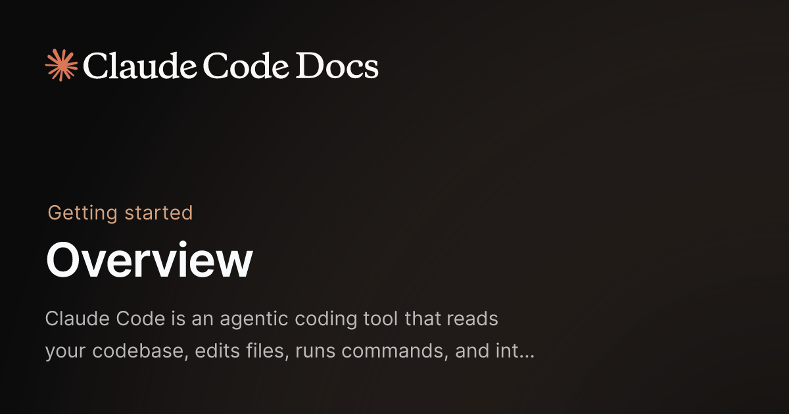

Janet 快车箱
AI Daily Briefing
2026-06-11
VOL 254
今天的共同主线不是模型变聪明，而是 Agent 终于被推进真实商业系统：OpenAI 和 Visa 把支付试验往前推，OpenAI 又和 Oracle 加码云容量，Warner Music 直接买下音乐 AI 初创公司，Google 和 NVIDIA 把本地扩散模型放到 RTX 设备上。AI 从演示台走进交易、版权、算力和端侧分发，每一步都开始要交账。
这对中国创作者和企业很现实：下一阶段的 AI 红利不在“会不会用 prompt”，而在能不能把 Agent 接到订单、客户、内容资产、财务审批和本地设备里。内容团队要管住版权和素材来源，电商团队要盯支付授权和退款风险，开发团队要把云成本、模型回滚、安全日志一起算进去。
接下来 2-4 周盯三件事：一是 Agent 支付会不会从实验变成平台默认能力，二是大模型公司和云厂的长约会不会继续推高推理成本，三是本地小模型和安全工具能不能把部分工作从云端拿回来。谁能让 Agent 既能干活又能对账，谁才有资格收企业的钱。

OpenAI 和 Visa 宣布围绕 agentic commerce 展开合作，重点是让 AI Agent 在用户授权下完成搜索、比价、下单和支付等流程。支付网络开始把 Agent 当成新交易入口，而不是只把它看成客服或推荐系统。

OpenAI 与 Oracle 扩大云基础设施合作，市场报道和公司信息均指向更大规模的计算容量采购。模型公司正在把未来增长绑定到长期云合约上，训练和推理都不再是轻资产故事。

OpenAI 发布报告，披露其发现并处置了多起利用 AI 生成内容进行影响力操作的活动，其中包括围绕不同地区政治、舆论和社交平台的内容生产。生成式 AI 的滥用治理正在从垃圾内容扩展到跨平台舆论操作。

Warner Music Group 宣布收购音乐 AI 公司 Sureel AI，后者聚焦艺术家授权、音乐生成和版权管理相关能力。音乐巨头选择买工具，而不是只在法务桌上反对生成式 AI。

Google 与 NVIDIA 宣布 DiffusionGemma 在 RTX AI PC 和工作站上运行，把图像生成扩散模型推向本地设备生态。端侧 AI 不再只讲隐私和离线，而是开始争夺创作工作流里的实时响应。

Google 的 DiffusionGemma 与 NVIDIA RTX 软件栈结合后，可以在支持的本地设备上运行图像生成任务。小型开放模型正在把一部分生成能力从云端平台拿回到个人和团队设备里。

OpenAI 更新 ChatGPT 的模型选择和产品说明，把不同任务、速度、推理能力和可用范围继续拆开。用户看到的是一个下拉菜单，背后是模型路由、成本控制和产品分层。

Anthropic 更新 Claude Code 和模型相关文档，继续强调长任务、工具调用、代码库理解和开发者工作流。编码模型正在从“能补全代码”走向“能管理一个工程任务”。

Meta 继续围绕 Llama 开源生态更新模型工具、部署资料和开发者资源，推动企业把开放权重模型放进私有场景。开源模型的价值正在从“能下载”转向“能被组织稳定维护”。
NVIDIA 发布自动驾驶安全相关技术文章，解释其如何把 AI、仿真、传感器和安全验证结合到自动驾驶系统研发里。自动驾驶的 AI 竞争点正在从感知能力扩展到验证体系。

Rubrik 推出面向 AI Agent 的安全与数据保护方案，强调对 Anthropic 等企业 AI 工作流的治理、数据访问和恢复能力。安全厂商正在把 Agent 当成新的风险入口来卖产品。
Gracenote 发布研究称，大型语言模型在部分娱乐内容识别和事实问答中仍会出现明显幻觉，尤其是涉及人物、节目和元数据时。媒体资产库正在提醒行业：生成模型不能替代权威数据源。

GitLab 推进 AI 驱动的软件开发与托管服务，把代码、CI、协作和模型能力继续整合进 DevSecOps 流程。开发平台正在把 AI 从插件层拉进软件交付管线。

Capsa AI 宣布完成 1800 万美元融资，主打面向金融机构和企业团队的 AI 自动化能力。资本继续把钱投向高价值、强流程、可量化省人的岗位。

GreyLabs AI 宣布获得新一轮融资，聚焦金融服务里的语音分析、客户对话和合规场景。AI 语音不再只是客服质检，而是在往销售、风控和客户经营里钻。
Jedify 宣布完成 2400 万美元融资，方向是企业知识、AI 搜索和内部工作流自动化。资本继续看好把公司散落数据变成可调用能力的中间层。

Composio 更新其 Agent 工具连接平台，继续提供面向开发者的应用集成、认证和动作调用能力。对做 Agent 产品的人来说，真正麻烦的部分常常不是模型，而是连接各种业务系统还能稳定授权。